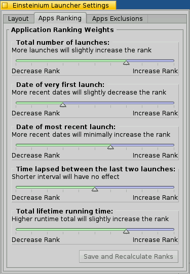

Einsteinium
Einsteinium for Haiku OS
Download the latest EinsteiniumPerelandra0x309/einsteinium/releases/latest
View the Project on GitHub Perelandra0x309/einsteinium
Download Haiku Nightlyhttp://download.haiku-os.org/nightly-images/x86_gcc2_hybrid/
About Einsteinium
What is Einsteinium?
Einsteinium is a suite of applications for the Haiku OS. The current version is built for the Haiku Nightly Images using the new package management system. If you wish to try Einsteinium please use the link on the left to download the most recent Haiku Nightly Image.
Einsteinium provides smarter monitoring of applications and system services for Haiku. The two major functions provided are:
- Restarting applications and system services that quit or crash
- Gathering data on application usage to provide customizable ranked lists of applications
Einsteinium is divided into four applications:
 Einsteinium Daemon:
Einsteinium Daemon:
This is a background application (daemon) that watches all the applications which are running. The daemon detects when an application quits or crashes, and can perform one of three options; automatically restart the app, provide a prompt to ask you whether the app should be restarted, or allow the app to quit and do nothing. The Einsteinium Daemon determines the appropriate action to take for each app by the settings you specify. This is useful for automatically restarting the Deskbar or Tracker if they crash, or restarting apps you like to have always running (such as a chat client, Terminal, or Mail). It can also monitor system servers to automatically restart any that crash.
 Einsteinium Engine:
Einsteinium Engine:
The Engine is another background application that captures data on every application that runs. Using this data, the Engine will create statistics on application usage (for example number of times an application has been launched, total running time, etc). These statistics are used to create ranked lists of applications based on certain criteria. For example, the Engine can create a list of the most recently run apps (the typical Recent Applications list), a list of apps with the longest total running time, a list of apps with the highest number of launches, and more are possible using the statistics gathered by the Einsteinium Engine.
 Einsteinium Launcher:
Einsteinium Launcher:
The Launcher is a simple application and file launcher, and is a working example of how to use the Engine to create application lists. The Launcher displays a list of applications, files, folders and queries which have been recently opened. The Launcher queries the Engine to create the list of applications ranked by specified criteria that you define. This allows you to have an application launcher with applications ordered the way you want them.
Einsteinium Preferences:
This is the preferences application that allows you to adjust settings for the Engine, Daemon and Launcher.
For complete documentation please view the ReadMe using the link on the left side of this page.
Installing Einsteinium
Installing is very simple by downloading the latest release file ending with ".hpgk". Open the downloaded file and you will see a description of the package and a button to complete the installation.
An alternate install method is using the HaikuDepot application included in the Haiku Nightly images. Search for Einsteinium, select it in the list and click the "Install" button.

When new versions of Einsteinium are released the Haiku package manager will update the Einsteinium package.
Einsteinium Quick Start Tips
- There is a Launcher deskbar icon that shows a menu of the ranked list of applications. It is the icon with the gold, silver and bronze boxes. Click this to quickly access the applications list.
- Use the Shortcuts preferences application to create a keyboard shortcut that quickly opens Launcher

- The Launcher application can be navigated using the mouse or keyboard keys, such as the TAB, arrows and RETURN keys
- Press a letter key and the next item in the list starting with that letter will be highlighted
- Press RETURN or left click on an item to open it
- Right click on any item to see additional actions to take
How To Use Einsteinium
Einsteinium Daemon:
The Daemon runs in the background and keeps track of the currently running applications, making sure that everything you want to stay running does (such as servers, Deskbar, Tracker, mail client, etc). Using the Einsteinium Preferences app you can specify the list of apps you want the Daemon to keep track of.
Open the Einsteinium Preferences app and select the “App Relaunch” option in the left side pane.
Here you can define how you want the Daemon to behave when specific applications quit. You also define the default behavior for any applications which are not specified in this list. The first entry labeled “Default setting (for all applications not in this list)” is the default behavior. Any specific applications you add (with the “Add...” button) will override the default behavior for that application.
You can setup each app's behavior to either automatically relaunch, have the Daemon prompt you whether you wish to relaunch the app, or do nothing. Each app in the list is color coded to match its setting:
- Green: when the app is set to automatically relaunch
- Blue: when the app is set to ask whether you want to relaunch the app
- Red: when the app is set to not relaunch
In the above screenshot, you can see that the default behavior is to have the Daemon ask if an application should be relaunched. The input_server is set to automatically relaunch if it quits. And the other four applications are set to not relaunch when they quit.
As an example of the default behavior, open the StyledEdit application and then quit it. The Daemon will determine that StyledEdit is not specified in the Preferences, so it uses the default setting and asks if you wish to restart the application:
Choosing “Yes” will restart the app and choosing “No” will not restart it.
If you wish to have the Daemon always use the same choice (always restart this app or never restart this app), then select the “Always use the following choice:” checkbox and then click “Yes” or “No”:
Doing so will add this application to the Preferences with your choice so the Daemon will always behave in the same way with this application. As you can see below, StyledEdit is now set to not relaunch:
If you find the Daemon too intrusive by having to tell it which choice you want for each new application it detects, you can change the default setting to “Do not relaunch this application when it quits”. Then the Daemon will do nothing by default, and only ask you or automatically restart apps that you specifically set to do so in the Preferences. This method would be best if you only have a few applications or servers you wish to restart while ignoring most other applications.
Einsteinium Launcher:
The Launcher is an application and file launcher that displays a list of applications, files, folders and queries.
The Apps list sorts applications according to the ranking criteria that you specify as being more or less important. The applications can be sorted by the following values:
- Total number of times the application has been launched
- The date and time of the very first launch
- The date and time of the most recent launch
- The time that elapsed between the two most recent launches
- The total running time of the application over its lifetime
Each of the values above is assigned a “weight” to determine how much the value effects the final order of each application listed. Each weight ranges from having a very positive effect (lists the application higher in the order) down to a very negative effect (lists the application lower in the order). In between these two extremes are weights which give a more moderate positive or negative effect, or no weight at all (in which the value has no effect on the final order).
To change the weight of each criteria value right click on any application in the list and click “Settings...”, then click on the “Apps Ranking” tab.

Here you can move each slider to increase or decrease the effect each criteria has on the final order of the application list. The weight options you have for each criteria are (from increasing to decreasing weights):
- Very heavily increase the rank
- Heavily increase the rank
- Moderately increase the rank
- Slightly increase the rank
- Minimally increase the rank
- No effect
- Minimally decrease the rank
- Slightly decrease the rank
- Moderately decrease the rank
- Heavily decrease the rank
- Very heavily decrease the rank
After changing any of the ranking weights click the “Save and Recalculate Ranks” button and the Launcher will be updated with a new list of applications based on these new weights.
You can also change the layout of the Launcher by clicking on the “Layout” tab.

Here for the Apps list you specify how many apps you want in the list. Also, the icons for each app will vary in size, from the highest ranking app to the lowest ranking app. Set how large you want the highest app and the lowest app to be, and all the apps between them will be proportionally scaled to transition in size from the highest to lowest sizes. If you want all the icons to be the same size, just set the highest and lowest sizes to be equal.
For files, folders and queries you can specify how many of each you would like to see and what the icon size is. These lists are ranked using the standard Haiku most recent list. However one feature of the files list is that the files are grouped by their type.
The overall font size and look of the Launcher window can also be changed on this tab.
In the “App Exclusions” tab you can specify applications that you do not want to appear in the Apps list at all. For example you can exclude the Deskbar and Tracker since you really will never manually launch these applications. All system servers and any applications located in /bin directories are automatically excluded and do not need to be specifically excluded.
An even easier way to exclude applications from the Launcher is by right clicking the application in the list and selecting “Exclude from Apps list”.
Also from the right click menu on an app you can quit the application (if it is open already) or open the folder where the app is located with the “Show in Tracker” menu option.
Einsteinium Launcher Quick Tips
- When you first run the Launcher, set the window size and position where you like it. Launcher will remember these settings.
- Hit the “TAB” key to switch between the tabs.
- The folder location of the highlighted item is shown at the bottom of the Launcher window.
- Use the mouse wheel to select next/previous item, click the wheel button to launch selected item.
- Use the up and down keys to select the next/previous item.
- Using the up/down keys and wheel mouse you can wrap around between the first and last items.
- Hit a letter on the keyboard repeatedly to cycle through items that start with that letter.
- Hold down the “ALT” or “SHIFT” keys while selecting an item and Launcher will remain open.
- Setup a quick key combo to run Launcher using the Shortcuts preferences, for example to run Launcher with ALT-E:
- Files are grouped together by their file type. These groups can be collapsed and expanded by clicking on the group or pressing the left/right key when the group item is selected.
- Press the “ESC” key to hide the Launcher without launching anything. (Note: When you click an item to launch it the Launcher hides but remains running. This is to ensure a quick response when you run the Launcher again. Press ALT-Q to fully quit the Launcher.)
- Right click on an item to get other options, including settings.
Einsteinium Preferences
The Einsteinium Preferences app allows you to change settings which effect the way the Daemon, Engine and Launcher behave. The Preferences application can be launched from the Haiku menu under the “Preferences” folder, or from the Launcher menu in the Deskbar.
The Daemon and Engine can be started and stopped easily from within the Preferences application under the “Daemon” and “Engine” sections. These sections also display the current running status.
Einsteinium Engine
The Engine is a background application that monitors all applications for when they launch and quit, and records these times into a database. The Engine is primarily called upon by other third party applications to provide a ranked list of applications given certain parameters. For developer information on using the Engine please see the Engine Subscriber's Development Guide.
If there are ever any problems with the Launcher menu list or any other application that uses the Engine, these may be resolved by running maintenance on the Engine database. This can be done by opening the Einsteinium Preferences, selecting the “Maintenance”section, and clicking the “Rescan Data” button.
Authors and Contributors
Einsteinium was first envisioned and started development in 1999 for BeOS 4.5 by Kris Finkenbinder, Mikeal Eiman and myself (Brian Hill @Perelandra0x309). We released a simple development version that demonstrated the Daemon restarting applications from a user defined list, and the Engine tracking the number of times an application had been launched. Since then BeOS has polymorphed several times, and development on Einsteinium stalled as the future of BeOS was uncertain. Then Haiku became the beacon of hope for the continuation BeOS unrestrained by commercial interests. Development of Einsteinium was resumed by myself and has progressed as time and life allowed. Now I am happy to release a full working version of Einsteinium that fulfills our vision from so many years ago.
Thank you for translations by:
- @humdingerb (German)
Support or Contact
Issues may be logged on the project's Issues page.